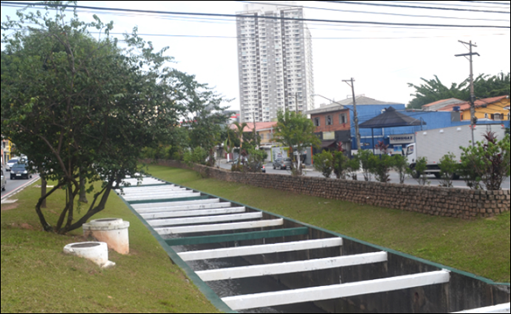
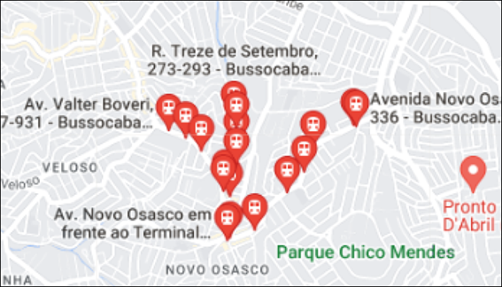

Informações Gerais
O bairro do Bussocaba tem 63 hectares, e sua ocupação foi feita através de 14 loteamentos que começaram nos anos 60.
Os loteamentos que formam o bairro são:
- Jardim Helena Maria;
- Jardim Olga;
- Jardim Marinho;
- Jardim Nossa Senhora Aparecida;
- Jardim Bussocaba;
- Vila Prado;
- Parque das rosas;
- Vila Jacy;
- Vila Maria Isabel;
- Jardim Atallah;
- Vila Ana;
- Vila Assaly;
- Jardim primavera;
- Conjunto Veloso de Castro.
Meios de Transporte
Em qualquer ponto da cidade existem linhas de ônibus que passam pelo bairro.
Graças a isso, nos últimos cinco anos, conjuntos residenciais com vários prédios têm se instalado ao longo das principais avenidas do Bussocaba.
O bairro não é bem arborizado, deixando a qualidade de vida um pouco menor, mas contém ciclofaixas e praças.
Localização
Os limites do bairro são definidos ao Leste pelo bairro Jardim D'Abril
e pelo córrego Bussocaba; ao Sul pelos bairros City Bussocaba e Novo
Osasco, pela Avenida Avedis Kamalakian e Avenida Walter Boveri, a
Oeste, pelos bairros Novo Osasco e Veloso, pela Avenida João de
Andrade e Rua Irineu B. de Oliveira.
O bairro se encontra dentre diversos pontos de entretenimento como o
parque Chico Mendes, de locais para compra como o bairro visinho Novo
Osasco, diversos shoppings como o Raposo, Butantã, União, e pode se
encontrar restaurantes, postos de gazolina, lanchonetes, lojas de
roupa, papelarias, padarias, supermercados, entre outros.